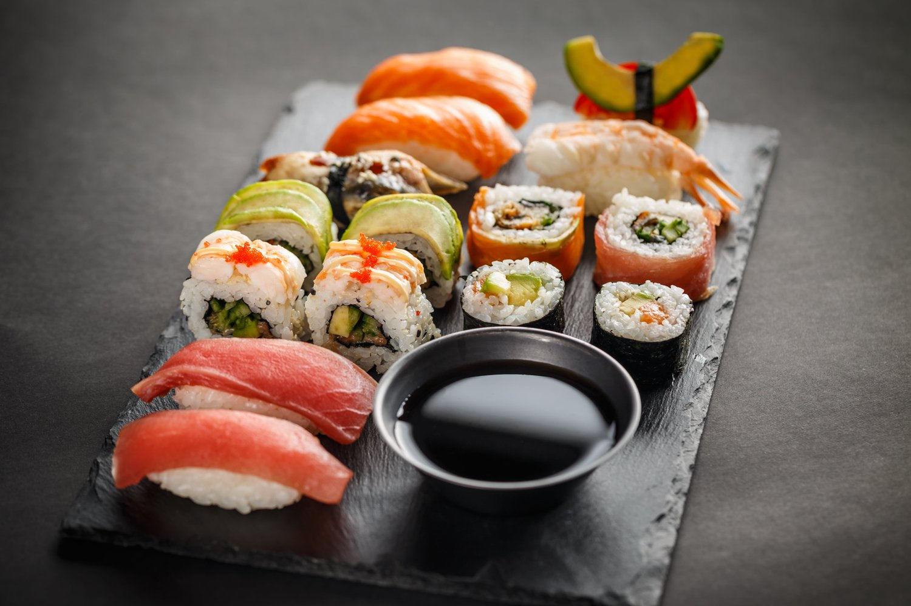

Popular Places
Japan is a country where ancient traditions meet cutting-edge modernity, and each region offers a unique experience. From the vibrant metropolis of Tokyo, where skyscrapers stand alongside historic temples, to the tranquil beauty of Kyoto with its centuries-old shrines and gardens, Japan showcases a rich cultural heritage. Osaka is renowned for its lively food scene and energetic nightlife, while Hiroshima and Nara provide poignant reminders of Japan’s past, with peace memorials and sacred sites. Nature lovers can marvel at the majestic Mount Fuji or explore the tropical beauty of Okinawa, while cities like Sapporo offer winter sports and natural hot springs. Japan’s diverse regions offer something for every traveler, combining tradition, innovation, and natural beauty in a way that's truly unique.
Foods
Food in Japan refers to a wide range of traditional and modern dishes, often emphasizing fresh ingredients, seasonality, and balance. Common elements include rice, seafood, vegetables, and noodles, prepared with techniques like grilling, steaming, or pickling. Key foods include sushi, tempura, ramen, and bento, with a focus on aesthetics and harmony in flavors, textures, and presentation.
Culture
Japanese culture is a rich blend of ancient traditions and modern influences, shaped by its history, religion, and natural environment. It emphasizes respect, harmony, and community, with strong values placed on family, etiquette, and social order. Traditional arts like tea ceremonies, calligraphy, and ikebana (flower arranging) coexist with pop culture phenomena like anime and manga. Japan also has a deep connection to nature, seen in practices like cherry blossom viewing (hanami) and seasonal festivals. The culture prioritizes humility, perseverance, and a strong sense of identity.
Festivals
Japanese festivals, or matsuri, are vibrant celebrations that honor traditions, seasons, and deities. They are marked by lively processions, traditional music, dances, and rituals. Each region has its own unique festivals, with famous examples including the Gion Matsuri in Kyoto, known for its grand floats, and the Tanabata Festival, where people celebrate the star-crossed lovers Orihime and Hikoboshi with colorful paper decorations. Other well-known festivals include the Awa Odori (traditional dance) and the Obon Festival, which honors ancestors. Matsuri foster a sense of community, joy, and cultural pride.

Sports
Sports in Japan are an important part of the culture, blending traditional activities with modern ones. Sumō, Japan's national sport, is steeped in centuries-old rituals and is widely admired. Baseball, introduced in the late 19th century, has become hugely popular, with high school tournaments like Koshien drawing immense attention. Other popular sports include judo, karate, kendo, and volleyball, each reflecting Japan’s commitment to discipline and respect. In recent decades, soccer has also gained a strong following, particularly with the rise of the J.League. Japanese sports emphasize teamwork, perseverance, and respect for opponents.